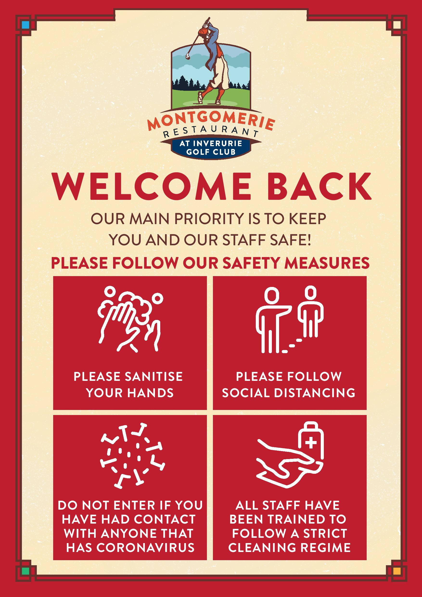

At the Montgomerie Restaurant, we’ve put in place measures designed to
ensure the safety of our staff and our guests alike.
Here’s what we’re doing in the restaurant and for our staff.
- We’ve carried out a full risk assessment.
-
Maximum booking of 6 people, we cannot accept multiple bookings for one
party for larger tables.
-
All orders will be taken at the table, there will be no bar service.
-
Upon arrival, please ensure you make yourself known to a member of staff,
as they will ensure you are shown to your table upon your arrival.
-
We are working off a reduced menu to help with social distancing within
our kitchens.
- Adapted shift patterns to allow our staff to return to work safely.
- Face coverings have been provided to all members of staff.
-
Members of staff must strive to achieve social distancing measures of 2
metres while at work.
-
New seating arrangement in line with Government 1-meter social distancing
rules.
- Enhanced Cleaning of key touch-points.
-
Menu’s and condiments sanitised after use. Through QR coding guests will
be able to also access our menus on their own devices.
-
Hand Sanitiser will be located at the main entrance for use on entry, exit
and throughout the restaurant.
-
We will collect the contact details of all guests in order to comply with
the government track and trace requirements.
And here’s how you can help.
-
We kindly ask to protect the safety of our staff and guests that if you
are feeling unwell please let us know and we can cancel your table.
-
Please respect our staff and all social distancing measure to make this a
safe and enjoyable experience for everyone.
-
We are encouraging contactless payments when possible, and then card
payments over cash when not.
-
It is the responsibility of guests to ensure they are remaining within
their social distancing bubbles at all times.
Thank you for your support and commitment to working together to reduce the spread of COVID-19
